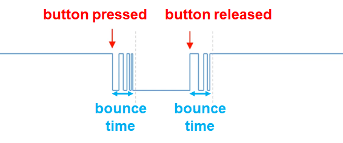
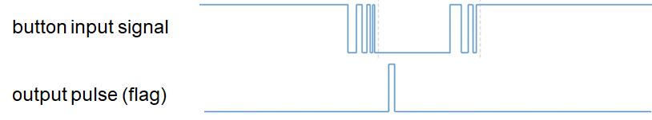
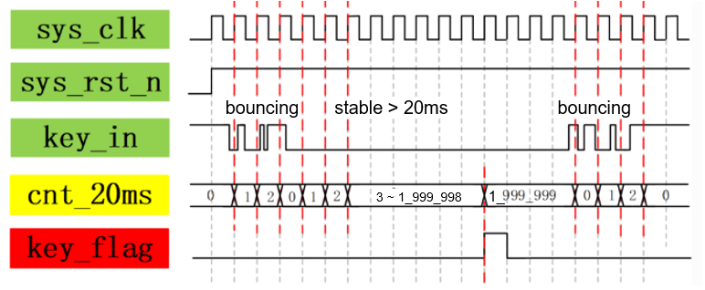

Digital Logic: Button Debouncing and Edge Detection
Objectives
- Understand mechanical button bounce and its effect on digital circuits.
- Master counter-based button debouncing.
- Master edge detection, which extracts a single pulse from a level signal.
- Implement the correct behavior in which one button press increments a counter exactly once.
1. Button Bounce
1.1 Physical Characteristics of a Mechanical Button
The buttons on the development board are mechanical switches. When a button is pressed or released, its metal contacts bounce several times, causing the signal to switch rapidly between 0 and 1 for approximately 5–20 ms.

1.2 Effects of Bounce
If an unfiltered button signal directly drives a counter enable:
- You expect one press to increment the counter by 1.
- The counter may actually increment 3–10 times from one press.
- Each bounce can produce an edge that triggers the count.
1.3 Experimental Observation
As an initial experiment, connect the button directly to the counter enable without debouncing and observe the board. A single press may cause the number on the seven-segment display to jump by several counts. This is the direct effect of contact bounce.
2. Button Debouncing
2.1 Counter-Delay Debouncing Principle
The central idea is to sample the signal and wait for it to stabilize:
- Continuously sample the button level.
- When a level change is detected, start a delay counter.
- Count from zero. If the level changes again during the counting interval, the signal is still bouncing, so restart the count.
- If the counter reaches the configured limit—for example, the number of clock cycles corresponding to 20 ms—the level has remained stable and the output may be updated.

2.2 Calculating the Delay Parameter
- Target debounce interval: approximately 20 ms
- System clock: 100 MHz → one cycle = 10 ns
- 20 ms = 20,000,000 ns
- Required count = 20,000,000 / 10 = 2,000,000
Therefore, CNT_WIDTH= 2_000_000.
2.3 Button-Debounce Module
module btn_debounce #(
parameter CNT_MAX = 20_000_000,
parameter CNT_WIDTH = 25
) (
input clk,
input rst_n,
input btn_in, // 带抖动的按键，低电平有效
output reg btn_out // 1周期输出脉冲，1代表按键被按下
);
reg [CNT_WIDTH-1:0] cnt_20ms; // counter for time window
// 计数器逻辑：检测按键是否稳定保持低电平
always @(posedge clk or negedge rst_n) begin
if (rst_n == 1'b0)
cnt_20ms <= 'b0;
else if (btn_in == 1'b1)
// 如果在此期间按键变高，说明是释放或抖动，清零
cnt_20ms <= 'b0;
else if (cnt_20ms == CNT_MAX - 1'b1 && btn_in == 1'b0)
// 计数达到设定阈值 (19_999_999)，保持该值不再累加
cnt_20ms <= cnt_20ms;
else
// 按键为低电平且未达阈值，继续累加
cnt_20ms <= cnt_20ms + 1'b1;
end
// 脉冲生成逻辑：在 19_999_999 这一刻产生单周期脉冲
always @(posedge clk or negedge rst_n) begin
if (rst_n == 1'b0)
btn_out <= 1'b0;
else if (cnt_20ms == CNT_MAX - 2'd2)
// 当计数器为 19_999_998 时，下一个时钟沿 cnt_20ms 将变为 19_999_999
// 此时拉高 btn_out，使其刚好在 19_999_999 期间保持为高电平
btn_out <= 1'b1;
else
// 其他时刻全部拉低，保证只有 1 个周期的脉冲
btn_out <= 1'b0;
end
endmodule
The module operates as shown below:

Sequence of operation:
- The button is pressed and the signal begins to bounce.
- Each level change resets
cntto zero. - Once the level stabilizes,
cntincrements normally. - When
cntreachesDEBOUNCE_MAX,btn_outis updated to the current stable level.
3. Edge Detection
3.1 Why Is Edge Detection Necessary?
When first writing hardware code, it is easy to make the intuitive mistake of placing an ordinary signal directly in the edge-triggered sensitivity list of an always block:
Incorrect:
always @(posedge btn_out) begin
cnt <= cnt + 1'b1;
...
end
// 这里的信号 'btn_out' 只是普通信号，例如按键按下，并没有被用作时钟或复位
This is incorrect because a chip contains a dedicated global clock-routing network that provides extremely low delay and reliable synchronization. Using posedge or negedge on an ordinary signal forces the synthesis tool to treat it as a clock. Ordinary routing does not meet the physical requirements of a clock network and can introduce glitches, cause serious timing failures, or even prevent successful synthesis and implementation.
Correct:
always @(posedge clk) begin
if(pos_edge)
cnt <= cnt + 1'b1;
...
end
Here, pos_edge is synchronous with clk. When a rising-edge event occurs on btn_out, pos_edge becomes 1 for exactly one clock cycle. This captures the transition while keeping the circuit safe and stable.
Why not use
if(btn_out)?btn_outis a level signal. It may remain 1 for several seconds while a button is held. If it is used directly as an enable, the counter continues to increment for the entire press—once on every enabled clock cycle—rather than incrementing only once per press.Edge detection converts a level signal into a single-cycle pulse, which is high for exactly one clock cycle at the instant of the press.
3.2 Edge-Detection Principle
Store the signal's value from the previous clock cycle in a register. Comparing the current value with the preceding value reveals an edge:
信号： 0 0 0 1 1 1 1 0 0
上一拍： x 0 0 0 1 1 1 1 0
上升沿： 0 0 1 0 0 0 0 0 （当前=1 且 上一拍=0）
下降沿： 0 0 0 0 0 0 1 0 （当前=0 且 上一拍=1）
3.3 Edge-Detection Module
module edge_detect (
input clk,
input rst_n,
input sig_in, // 输入信号（通常接消抖后的 btn_out）
output pos_edge, // 上升沿脉冲（单周期）
output neg_edge // 下降沿脉冲（单周期）
);
reg sig_d; // 延迟一拍的信号
always @(posedge clk or negedge rst_n) begin
if (!rst_n)
sig_d <= 1'b0;
else
sig_d <= sig_in;
end
assign pos_edge = sig_in & ~sig_d; // 当前高，上一拍低 → 上升沿
assign neg_edge = ~sig_in & sig_d; // 当前低，上一拍高 → 下降沿
endmodule
Timing waveform:
clk: _|‾|_|‾|_|‾|_|‾|_|‾|_|‾|_|‾|_
sig_in: _____|‾‾‾‾‾‾‾‾‾‾‾‾|__________
sig_d: ________|‾‾‾‾‾‾‾‾‾‾‾‾|_______
pos_edge: _____|‾|__________________________
neg_edge: ___________________|‾|__________
3.4 Combining Debouncing and Edge Detection
In practice, the two modules are usually connected in series:
btn_in(有抖动) → btn_debounce → btn_out(干净电平) → edge_detect → pos_edge(单脉冲)
4. Laboratory Exercise
Exercise: Button-Controlled Counter
Requirement: Toggle the state of an LED once for each button press.
Test the design on the board using one of the five buttons on the right side of the EGO1 development board.
Appendix: Frequently Asked Questions
-
Q: Why does the count still jump after debouncing? A: Check whether
COUNT_MAXis sufficiently large. A 20 ms interval (2,000,000 cycles at 100 MHz) is recommended. If the value is too small, the output may be updated before the bouncing has ended. -
Q: Why is there no response to the button? A: Check the button's pin constraint. Consult the EGO1 manual to determine whether the button is active-high or active-low. For an active-low button, invert the signal or use falling-edge detection.